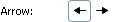
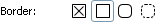
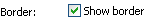
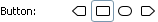
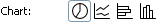
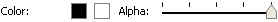
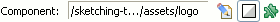
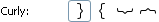
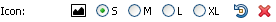
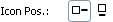
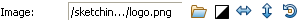
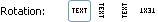
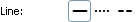
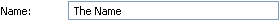
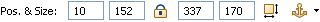

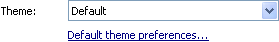
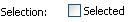
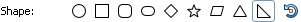
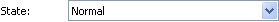
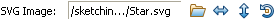
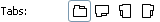
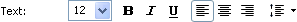
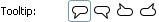
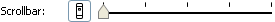
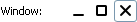
The Properties view allows you to quickly edit the properties of the selected objects. If multiple objects are selected then the view lets you edit just the common properties of those objects.
Here’s a table of available properties:
| Property | Description |
|---|---|
| Arrow 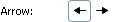 |
Lets you toggle on and off arrow heads. |
| Border 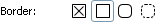 |
Lets you switch the border style for Panel widget. Available styles are None, Square, Rounded and Dashed Rounded. |
| Border Toggle 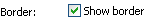 |
Lets you toggle on and off the border for Shape, List, Table and Tree widgets. |
| Button 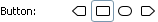 |
Lets you switch the button’s style between Point Left, Square, Round and Point Right. Can be used to represent iPhone/iOS pointy button widget. |
| Chart 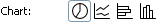 |
Lets you switch the chart’s style between Pie, Line, Bar and Column. |
| Color 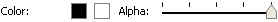 |
Lets you control color properties such as background, foreground and border. Alpha slider lets you change the opacity for widgets that support it. |
| Component 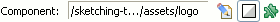 |
Displays the source screen file for Component widget. Lets you open and edit the source screen. It’s also possible to gray out a component in design mode. It’s useful for background templates that you wish to stay out of your way. Components can also be detached from their source and transformed into a group. |
| Curly Brace 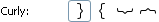 |
Lets you switch the orientation of a Curly Brace between Left, Right, Top and Bottom. |
| Icon 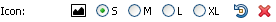 |
Lets you choose an icon for some widgets. When an icon is selected you can choose its size between Small (16×16), Medium (24×24), Large (32×32) and Extra Large (48×48). Icons can also be rotated in 90 degree increments. Delete button lets you remove previously specified icon. |
| Icon Position 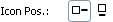 |
Lets you switch the position of an Icon between Left and Top. This property is available for Shape and Label widgets that have an icon selected. |
| Image 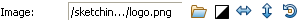 |
Lets you choose a raster image file from available assets for Image widget. Black and White toggle lets you automatically render colored images in grayscale colors. Image can be flipped horizontally and vertically and rotated in 90 degrees increments. |
| Label Rotation 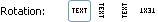 |
Lets you rotate the text of a Label widget in 90 degree increments. |
| Line Style 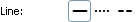 |
Lets you control the line style for Arrow, Shape, Horizontal and Vertical Line. Available styles are Solid, Dotted and Dashed. |
| List |
Lets you control the row height and the visibility of horizontal grid lines for List and Table widgets. Additionally you can control the visibility of vertical lines and header for Table widget. |
| Name 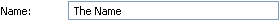 |
Lets you assign a name to a Group widget. |
| Position & Size 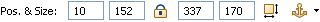 |
Gives you a fine control over position and size properties. Use arrow keys to increment and decrement values. Lock toggle lets you lock a widget in place so it gets out of your way. Auto-size button forces a widget to resize to its preferred size. When editing groups or components the anchor drop-down becomes available and allows to control anchor settings. |
| Screen Font |
Lets you specify a font per-screen. To access this property click in the empty space in Screen Editor. You can also revert to a global font configured in WireframeSketcher’s preferences. |
| Screen Theme 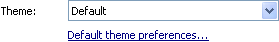 |
Lets you specify choose between Clean and Sketch theme for a screen. To access this property click in the empty space in Screen Editor. Default theme choice makes the screen use a global theme configured in WireframeSketcher’s preferences. |
| Selection |
Lets you specify the selected item or row. |
| Selection Toggle 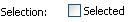 |
Lets you toggle the selected state for Checkbox and Radio Button widgets. |
| Shape 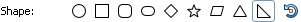 |
Lets you choose the type of Shape widget. Possible choices are Ellipse, Rectangle, Rounded Rectangle, Round Rectangle, Diamond, Star, Parallelogram, Triangle, Right Triangle. Some shapes can be rotated in 90 degrees increments. |
| State 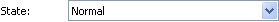 |
Lets you specify the state of the widget. This mostly applies to input (form) widgets. Possible choices are Normal, Selected, Disabled, Focused. |
| SVG Image 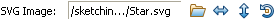 |
Lets you choose the SVG image file from available assets for SVG Image widget. Image can be flipped horizontally and vertically and rotated in 90 degrees increments. |
| Tabs 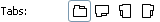 |
Lets you change the orientation of Tabs and Tabbed Pane widgets. Possible choices are Top, Bottom, Left and Right. |
| Text 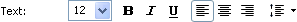 |
Lets you specify the font size and and toggle Bold, Italic and Underline font styles. For some widgets you can also specify Left, Center or Right text alignment. For Text and Text Area widgets you can also set the line height (leading). Line height is expressed as a multiple of font size. |
| Tooltip 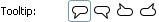 |
Lets you specify the orientation of Tooltip widget. Possible values are Bottom Left, Bottom Right, Top Left and Top Right. |
| Scrollbar 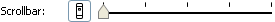 |
Lets you toggle on and off the visibility of vertical scrollbar. When visible, you can also specify the position of the thumb. |
| Window 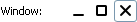 |
Lets you toggle on and off the visibility of minimize, maximize and close buttons for Window widget. |
Next: Moving and Resizing